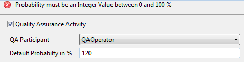

Figure: Adding a QA Code
In the property page of interactive activities marked for quality assurance, quality assurance criteria can be specified to determine during runtime if the activity instance requires quality assurance or not. For failing quality assurance, error code can be selected, which was created in the model property page.
To mark interactive activities for quality assurance, select the checkbox Quality Assurance Activity in the property page.
Figure: Mark activity for quality assurance.
Note that it is not supported to mark an activity with a conditional performer as default performer. In this case, selecting the checkbox results in an inconsistency error.
Figure: Conditional Performer is not allowed for Quality
Assurance.
The following criteria for quality assurance can be entered in the activity property page, in case the activity is marked for quality assurance:
Figure: Quality Assurance
For details on how probability value and formula are used to determine quality assurance, refer to chapter Quality Assurance in the Concepts section for Stardust.
In the QA Participant drop-down list you can choose the participant for quality assurance. All scoped and unscoped roles and organizations are available except conditional performers.
Figure: Select Quality Assurance Participant.
The probability determines the percentage for quality assurance performed on activities. The default probability has to be an Integer value between 0 and 100. For example:
The default value is 100%. If the value is outside the accepted range, an error message appears.

Figure: Error message for invalid Default Probability value.
The Formula section provides a JavaScript editor, where you can enter a formula that will be evaluated during runtime to check if this activity needs quality assurance. The default value is true. For details on how this formula is evaluated, refer to section JavaScript Expression of chapter Quality Assurance in the Concepts section for Stardust.
Figure: Quality Assurance Criteria
You have the option to define Quality Assurance codes that can be used to track the reasons for Quality Assurance failures. This codes can be set and edited in the property page of the workflow model. In an interactive activity marked for quality assurance, you can select one or more of these quality assurance codes.
The Quality Assurance Codes panel in the model property page contains a table of all Quality Assurance codes defined for the model and their values.
Figure: Quality Assurance Code entries
To add a new code, click Add. Enter the code ID, name and description.
Figure: Adding a QA Code
For restrictions and general details on model element identifiers, please refer to chapter Model Element Identifiers of the Key Concepts.
By default automatic Id generation is provided. If you type in the name of the code, the Id is generated automatically by using its name. To build the Id, the spaces of the name are left out. All non-supported characters are replaced by an underscore.
If you like to disable automatic Id generation, disable the option Enable Auto Id Generation in the Preferences. Please refer to section Enable Auto Id Generation of chapter Setting Process Manager Preferences for details on this option.
To delete a code, select the according row and click Delete.
Select a code in the tree on the left side to edit its properties.
Figure: Editing Quality Assurance Code entries
You can use the Move Up and Move Down buttons to adjust the order of the codes.
Click Apply or OK to apply all changes. In case you like to restore the default values, click Restore Defaults.
In the activity property page Quality Assurance Codes you can select a subset of code you will use for this quality assurance activity.
Figure: Selecting Quality Assurance Code.